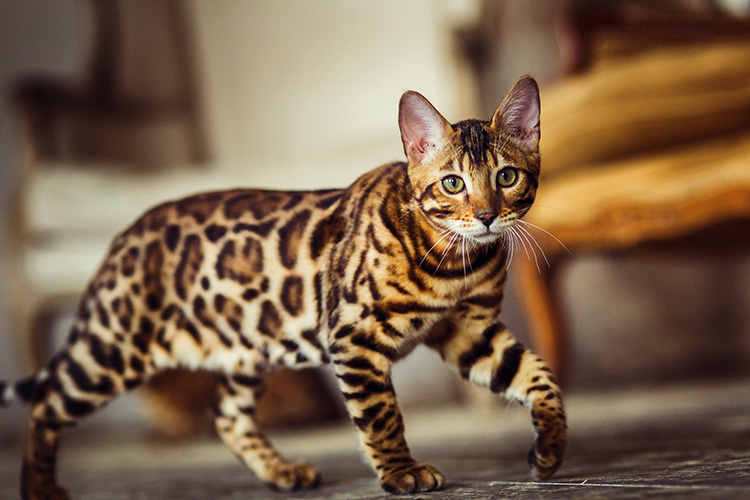
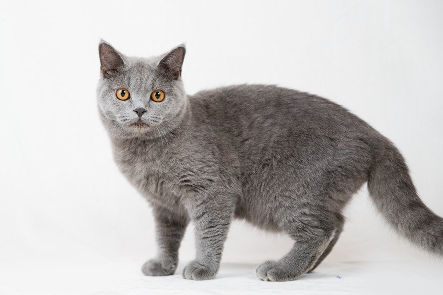
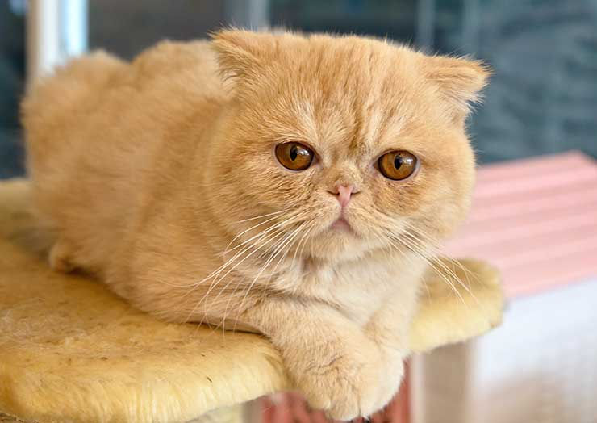
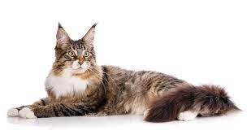
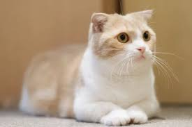
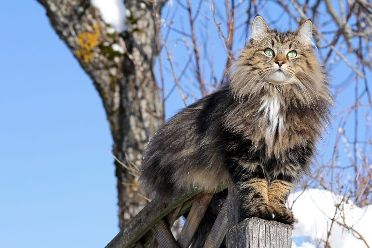
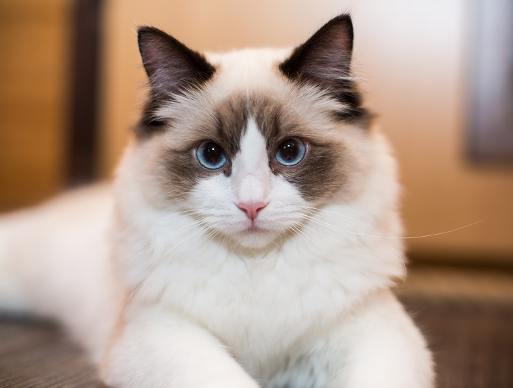
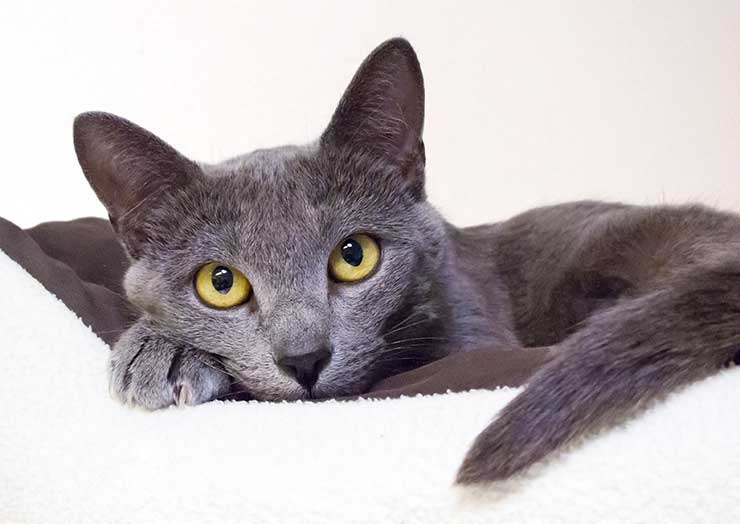
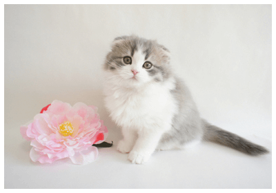
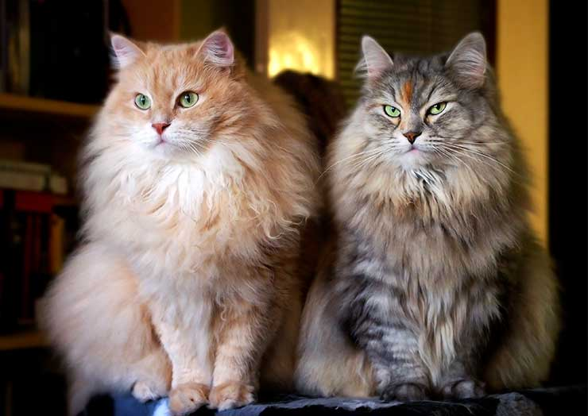

海外の猫の紹介
-

- ベンガルキャット
- かっこいい豹柄模様の皮毛で、絹のような柔らかい手触りの猫
皮毛の色は、ブラウン、シルバー、ブルー、スノウが多く見られる
-

- ブリティッシュ・ショートヘアー
- がっしりと力強い体つきをしていて、猫としては中〜大型にあたる猫
に「ブルー」と呼ばれるグレーの毛色が人気で「ブリティッシュブルー」とも呼ばれる
-

- エキゾチックショートヘアー
- ペルシャ猫の優雅さと愛嬌のある表情を併せ持つ、人気のある猫
やや離れ気味の大きな丸い目が特徴的
-

- メインクーン
- がっしりとした大きな体格の見た目とは裏腹に、非常に穏やかで優しい性格
人懐っこい性格をしていて、飼い主と共に行動することを好む
-

- マンチカン
- 短い足が特徴的な猫
とても穏やかでおとなしい性格をしている。社交性も高く、人や他の動物と共存しやすい
-

- ノルウェージャンフォレストキャット
- 厳しい寒さに耐えるため、ふわふわの被毛とがっしりとした骨格、そして筋肉質な体をしている
-

- ラグドール
- ふさふさとした、白く長い毛とブルーの瞳が印象的
存在感のある大きさと、抱っこも好む順応性の高さが特徴
-

- ロシアンブルー
- 光沢のある短いブルーの被毛と、エメラルドグリーンの大きな目が特徴
歩く姿は、ロシア皇帝や英国女王などにも愛されたという話も
-

- スコティッシュフォールド
- 耳が折れているのが特徴で丸みのある体型がとてもかわいらしく、毛並みはシルクのような肌触り
-

- サイベリアン
- ふさふさの長い毛、ゴージャスなしっぽに大きな体
賢くて、飼い主さんとのコミュニケーションがよくできる猫